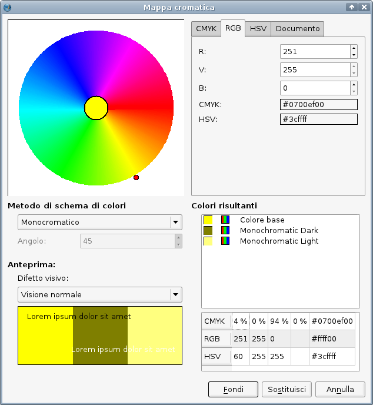
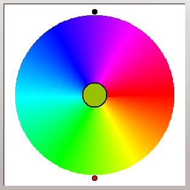
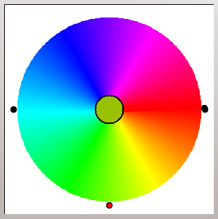
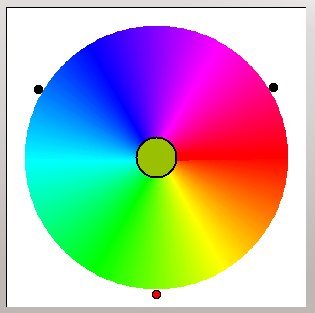
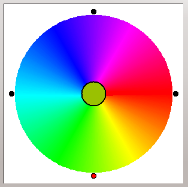
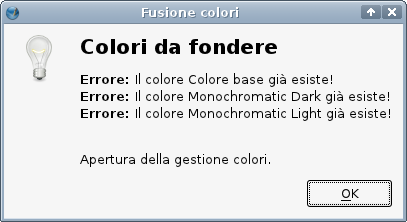

Una mappa cromatica (o cerchio del colore) è uno strumento originariamente creato da scienziati come Isaac Newton per visualizzare lo spettro fisico di tutti i colori; oggi è usato da artisti e grafici per selezionare e abbinare colori in base alla percezione del colore. Come i modelli di colore RGB e CMY(K), una mappa cromatica si serve del concetto di colori primari, in questo caso rosso, giallo e blu, da cui l'abbreviazione RYB (dall'inglese red-yellow-blue). Esistono altre mappe cromatiche basate sui modelli di colore RGB o CMY(K), ma quella di Scribus segue il tradizionale approccio “artistico” o “percettivo”, poiché questo è il modo di garantire (quasi sempre) risultati visualmente piacevoli nella progettazione grafica, con l'utilizzo di formule basate sulle osservazioni e ricerche di Goethe e dei suoi successori.
|
| La mappa cromatica RYB |
La finestra di dialogo Mappa Cromatica (che si apre da Utilità > Mappa Cromatica) può apparire semplice a prima vista, ma in realtà è molto versatile. Osservate che è utilizzabile soltanto con un documento aperto, poiché le armonie di colore che potete creare qui vengono aggiunte ai colori del documento.
|  |
Nella parte superiore sinistra della finestra si trova la mappa cromatica vera e propria, che appare come un cerchio multicolore. In base allo schema di colore scelto, vedrete uno o più circoletti posizionati sul bordo del cerchio: essi sono gli indicatori di colore, e potete spostarli con il mouse per modificare lo schema di colore. Al centro della ruota è sempre presente un solo colore: questo è il colore base, cioè quello che determina gli altri colori dello schema. Potete cambiarlo facendo clic in un punto della mappa oppure scegliendo un altro colore base nella sezione a destra della mappa.
Al di sotto della mappa potete selezionare lo schema di colore, che è spiegato più avanti. Poiché gli schemi di colore sono basati su idee geometriche, potete modificare anche l'angolo o la “distanza” tra i colori in alcuni (ma non tutti) di essi.
La finestra di dialogo fornisce tre tipi di modelli di colore, con la selezione delle variabili di colore per impostare il colore base. I modelli CMYK, RGB e HSV sono spiegati in questa pagina. Inoltre, potete scegliere i colori tra tutti i colori del documento, cioè tra quelli della raccolta colore attualmente selezionata e quelli importati o creati ex novo.
Monocromatico:
Lo schema di colore monocromatico (mostrato sopra) è la combinazione di un colore base con una variante scura e chiara del colore stesso. Non è possibile modificare l'“angolo,” poiché non vi è relazione geometrica tra i colori.
Analogo:
 |
Lo schema di colore analogo ha l'obiettivo di creare armonie di colore utilizzando colori “tra loro vicini” nella mappa cromatica. L'utilità di questo schema (specialmente nella stampa offset) dipende dalla presenza di un sufficiente contrasto tra i colori; è quindi consigliabile mantenere un valore dell'“angolo” abbastanza grande.
Complementare:
|  |
I colori complementari sono quelli che si trovano in punti opposti tra loro nella mappa cromatica, quindi il campo Angolo è disattivato. Il loro migliore utilizzo consiste nel creare forti contrasti tra aree ampie, ma dovrebbero essere evitati come colori per il testo e lo sfondo del testo, poiché rendono il testo quasi illeggibile.
Complementare separato:
|  |
A differenza dello schema complementare, il complementare separato utilizza un colore base e due colori vicini al complementare del colore base. La “distanza” tra i colori complmentari separati e il colore complementare deve essere la stessa per entrambi, ma la distanza stessa può variare, e questo è il motivo per cui si può modificare l'“angolo.”
Triadico:
|  |
In uno schema di colore triadico, tre colori sono collocati sulla mappa cromatica in modo da formare un triangolo equilatero. Quindi l'“angolo” non è modificabile.
Tetradico (o Complementare doppio)
|  |
Lo schema di colore tetradico comprende due coppie di colori complementari (da qui il nome alternativo “complementare doppio”). Se entrambe le coppie sono posizionate ad un angolo di 90° (che è l'impostazione predefinita), essi sono distribuiti sulla mappa a intervalli regolari; questo caso speciale è chiamato anche schema di colori “quadrato”. Non vi è alcun bisogno di limitarsi a uno schema quadrato, e quindi l'“angolo” può essere modificato.
Nella parte in basso a destra della finestra, sono visualizzati i “colori risultanti” in tutti i tre modelli di colore. Purtroppo i nomi dei colori nel nuovo schema vengono creati automaticamente, e non è possibile modificarli in questa finestra. Quindi dovrete rinominarli in Modifica > Colori se volete utilizzare più armonie di colori nel documento, oppure se volete che i colori dello schema siano elencati vicini tra loro nelle finestre di gestione dei colori.
La sezione Anteprima della finestra di dialogo fornisce un'anteprima dello schema di colore selezionato, con un testo campione in 100% nero RGB e bianco RGB per mostrare l'aspetto del testo sullo sfondo di aree che utilizzano quei colori. Un'importante caratteristica dell'anteprima è la simulazione della cecità al colore. Quando ci si serve di armonie di colore, non si dovrebbe mai dimenticare che certe combinazioni di colore che funzionano bene per la maggioranza potrebbero non funzionare affatto per persone che soffrono di certi difetti visivi. Ad esempio, due colori contrastanti potrebbero apparire come un unico colore, oppure del testo facilmente leggibile quando collocato davanti a un'area colorata potrebbe scomparire completamente per persone con certi difetti visivi.
Nella parte inferiore della finestra sono presenti due opzioni per aggiungere lo schema di colore scelto ai colori del documento: “Fondi” e “Sostituisci.”
Fondi: aggiunge i colori che avete creato a quelli del documento. Se avete già creato un altro schema di colore senza aver cambiato i nomi dei colori di questo schema, appare la seguente finestra di dialogo:
|  |
Come descritto, si apre la finestra di dialogo Colori, e qui potete rinominare gli schemi di colore esistenti. Potete poi tornare alla mappa cromatica e fondere la nuova armonia di colori.
Sostituisci: prevedibilmente, sostituisce i colori di uno schema creato in precedenza che hanno lo stesso nome nella finestra Colore.
Vi sono diverse limitazioni sia nel modello colore RYB sia nella sua implementazione in Scribus: